(This is a placeholder title. Edit away!)
This is an example of a specially styled paragraph.
Hello, dear reader!
This book is a sequel to the first book, ‘Meet Dameo!’ That time we got to know the game, and now we are planning a deeper dive into it.
The idea of the second book is to show the beauty and inexhaustibility of this game, the intentions and plans of the sides, and the originality of the players’ thinking through examples of whole games or long fragments of them. Consistency in carrying out the plans of the players and a vivid battle of minds constitute the beauty of any intellectual game.
It is very difficult to comment on Dameo games because of the huge number of moves and variants. Only a computer program can handle such a massive amount, but we are not going to complain and will try to study and understand this little-explored game more deeply by means of ordinary human manual analysis.
We assume that the reader is already familiar with Dameo’s rules, but we will still briefly describe them. Sufficiently experienced players can skip this description and proceed to the next chapter.
So, the rules of Dameo are to a certain extent the same as the rules of international draughts, but there are three major differences, namely:
- a simple checker moves forward in three directions; a king moves in 8 directions, like a queen in Chess to any available number of cells.
- a simple checker may jump over one or more other checkers of its own colour, provided that the field ahead is free; the king does not participate in a line jump (red arrows below on the diagram).
- all captures in Dameo are straight (orthogonal) only; a simple checker may capture forward, backward, or sideways by the short leap; a king may capture by the long leap.
All three differences are shown in diagrams 1a, 1b and 1c.
The rest of the rules (the rule of majority capture, the rule of Turkish strike) coincide with the rules of international draughts.
1a
1b 
1c 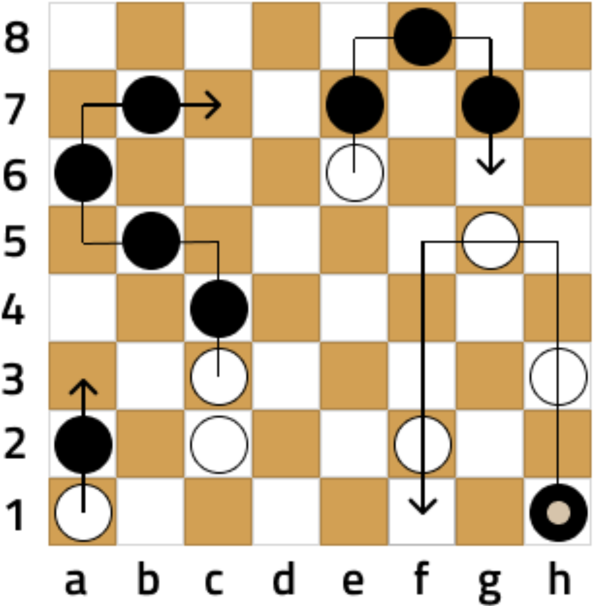
An important distinguishing feature of Dameo is the fact that two kings always defeat a lone king. Due to this, you will win with even a small advantage. This leads to a high percentage of decisive games compared to international draughts, which tends to draw in high level play. The construction of the winning position is shown in the first book in the chapter ‘Two kings against one’.
Well, that’s the end of the introductory part and let’s move on to the main content.
Beginner_2017 vs Busybee
littlegolem.net
Tournament: draughts.cv.DAMEO.16.1.1
2023
Games against player Busybee are always difficult but memorable. Busybee is probably the strongest Dameo player but he also has outstanding results in other games. For example, Busybee has a 100% win rate in such complex games as Shogi and Lines of Action. It is always nice to come across something unexplainable and genius, because it is an unforgettable experience for us ordinary people.
Our meeting had everything: a very complex opening, inventive play from both sides, nonobvious mistakes and nonobvious punishment for them, and a cascade of combination hits.
| 1. | e3e4 | g8h7 |
| 2. | g1g3 | h7g6 |
Diagr.1
Black plays ingratiatingly and is not in a hurry. In fact, Busybee made the move g8g6 in two stages. In Chess, such a loss of time often leads to bad consequences in the opening, but Dameo allows you to regulate the pace of your development.
| 3. | d2d4 | g7g5 |
| 4. | e1e3 | d8b6 |
Diagr.2

White also made the move e1e4 in two stages. I just decided to not rush either and see the opponent’s intentions. White builds up its forces in the centre and isn’t afraid of penetration by the opponent on the field h4:
| 4. | … | g5h4 |
| 5. | d1g4 | h4:f4 |
| 6. | f3:f5 | f6:f4 |
| 7. | e4:g4 | … |
Diagr.3

White has a small advantage in development, as well as 6 pieces
against 4 on its right flank. Take note that White removed the black
checker f6 to avoid the exchange g6g5. In this case Black would have
strengthened on the vertical ‘h’.
All of the above doesn’t mean that White has a clear advantage, just it
would be clear and easy for me to play in such a position. Next, I would
plan to accumulate forces on verticals ‘g’ and ‘h’, planning an attack
and breakthrough on the right flank.
Again I emphasise that Black’s position is quite good, I just like to
play with clear guidelines. In this case it is an attack by White’s
checkers on the right flank.
Since Busybee refused this variant, I decided to take the h4 field myself.
| 5. | f2h4 | e6f5 |
Diagr.4
Possessing excellent combinational vision, Busybee often gives away
the edge vertical, but constructs similar fists of checkers and sets
endless traps.
Now it is impossible to go to the field h5 due to the uncomplicated
strike:
| 6. | h4h5? | f5g4! |
| 7. | h5:f5 | f6:h2 |
| 8. | g3:g7 | f7:h7 |
| 9. | h1:h3 | … |
Diagr.5

Despite the material equality, White’s position is worse due to the weakness of the right flank. Black’s attack on the line ‘h’ is very dangerous.
I decided not to hurry and first closed the field f2.
| 6. | f1f2 | e7e6 |
Diagr.6

The position escalates with each move. Now, when White has already
closed the hole f2, I really wanted to play 7.h4h5. Of course, Black has
many answers, it’s impossible to consider them all, but from a logical
point of view there are two continuations.
Let’s consider each of them.
А)
| 7. | h4h5 | g5f4 |
| 8. | e4:g4 | g6g5 |
| 9. | g4:g6 | f6:h4 |
A splinter like that is hard to tolerate, so:
| 10. | g2h3 | h4:h2 |
| 11. | h1:h3 | … |
Diagr.7

During the game I saw this position in my mind and considered it as
favourable for White. Why? I thought that I could continue the attack on
the right flank by quickly moving forces there (d1g4, f2h4, e2h5). This
plan is clear and understandable, so it’s easier to play this way.
But Black has a second continuation:
B)
| 7. | h4h5 | g6g4!? |
This answer leads to puzzling complications that are impossible for a human to figure out. Therefore, I didn’t risk going for this continuation against a master of combination play like Busybee. What follows is possible:
| 8. | g3h4 | g5f4!? |
Diagr.8

In this position the variants are useless, because they are
inexhaustible. I feared the binding of my centre by b8e5, and the march
of my two pieces on the vertical ‘h’ is broken by the h8 piece. I didn’t
believe that I would get the king and be able to save it.
So I decided to prepare more thoroughly an attack on the right extreme
line (back to diagram 6).
Diagr.6
| 7. | g2h3 | f6e5 |
Black still binds White’s centre, but in an unusual way. Obviously, Busybee provokes me, leaving a hole on the f6. But what did he come up with?
| 8. | h3h5 | b6b5?! |
Diagr.9

What? B6b5?? I wasn’t expecting this move at all. I would never have
come up with it! Despite the sign ‘?!’, the move b6b5 is absolutely
grandiose in its plan, but the problem is that I found an unexpected
refutation. What is Black’s plan against the h4h6 attack?
Let’s see!
| 9. | h4h6? | f5g4!! |
The white checker moves to d5 directly under the bind.
| 10. | h5:d5 | g4:g2 |
Black knocks out the pillar of White’s position - checker f2.
Diagr.10

Further there are possible insignificant permutations of moves, but we see that after
| 11. | h6:f6 | f7:f5 |
| 12. | f2:h2 | b5c4! |
Diagr.11

Black undermines White’s centre, gets material advantage and a won
position.
A crazy combination idea! I must confess that during the game I didn’t
see any of this, but just believed in my opponent.
Suddenly I saw that instead of a reckless attack I could
counter-attack and the hunter would become the fowl!
Let’s go back to the diagram 9.
Diagr.9
In Black’s position the dark squares are weakened, and it is possible to use this disadvantage with an oblique hit if there is a confrontation of squares in the centre. But where are the squares? If they are not there, we will create them!
| 9. | f2c5! | b5:d5 |
| 10. | e3c5! | e5:e1 |
| 11. | c5:g7 | g6:g8 |
| 12. | d1:f1 | … |
Diagr.12

Despite the material equality White has an advantage, as Black is behind in development and has no counterplay. Busybee decides to simplify the position by exchanges.
| 12. | … | f5f4 |
| 13. | f3:f5 | g5:e5 |
I didn’t like the active centre piece e5, so I decided to exchange it.
| 14. | b1e4 | e5:e3 |
| 15. | d3:f3 | c8e6 |
Diagr.13

I thought that the advantage in development and the twofold superiority in forces on the right flank would give me an excellent chance of victory. This is true, but White’s position has one disadvantage: the pieces are still fragmented and, as a consequence, have little interaction. With this in mind, Busybee carries out a plan with a sharp build-up of forces in the centre to attack White’s most vulnerable area between the flanks.
| 16. | h1g2 | e8e7 |
| 17. | c2d3?! | … |
Diagr.14

Perhaps, this move loses all the advantage. White closes the hole d3, but opens the field c2, and Black instantly uses it. Better was 17.b2b3.
| 17. | … | d7f5! |
Now the field g5 is inaccessible for White.
| 18. | g2g4 | b7d5! |
| 19. | b2b3 | … |
White finally closes its weak fields on the left flank, but Black makes a capture of the centre.
| 19. | … | b8e5 |
| 20. | g3g5? | … |
Diagr.15

White decided that it was time to take action after consolidating his forces. I convinced myself that neither e5f4 nor d6f4 is dangerous for me. In addition, c7f4 isn’t valid, because at the end of the variant the g5 piece gets on the c7 square with two extra pieces.
This is true, but the intention to outsmart Busybee in the combination game turned out to be too naive.
| 20. | … | d5c4!! |
Busybee gets rid of his checker, which hinders Black in all variants.
| 21. | d4:b4 | … |
What else to do? Another capture would lead to the loss of a checker and Black’s powerful centre position. I won’t catch a chance there.
| 21. | … | c7f4 |
When there isn’t a d5 piece, this strike is very strong.
| 22. | g4:e4 | e5:g3 |
| 23. | g5:e5 | e6:e4 |
Diagr.16

Even though there are equal pieces on both sides, Black’s position is
won as Busybee can get 2 kings. One of them dies in the a1—c1 trap, but
the other survives.
This was clear enough to me, but only a few players know my character.
In lost positions I often play the strongest.
It’s easy to play when everything on the board is good for you, but how
hard it is to gather yourself at a critical moment and find a chain of
the best moves with the faint hope for a draw! Perhaps my innate
optimism helps me in this regard. Anyway, out of all the games I won, I
had a very bad position in 30% of them.
So, let’s look at the diagram.
Firstly, we need to prevent Black from getting 2 kings. To do this, we
take control of the f3 square.
| 24. | f1f2! | g3h2 |
| 25. | c3a5 | … |
Secondly, we organise our own counter-play. It is necessary to constantly keep the opponent in suspense.
| 25. | … | e7f6! |
Diagr.17
Take note of Black’s last move. This is a very multidimensional move. Checker f6 goes to help checker e4 to make a breakthrough on the field f3. But why didn’t Black play d6e5 for this purpose? Then Busybee would save 1 tempo! But the d6 piece should go to c5 and close the c6 piece if White gets a king on c8. In this case White’s king is caught by the way g8h7.
Given this reasoning, I concluded that it is necessary to attack the black pieces on the last row to destroy the trap for the future king on c8.
| 26. | h4h6! | d6c5 |
| 27. | h5h7! | … |
Diagr.18
White fights with all its might! Threatens h6g7, and at any capture White gets a king either on g8 or h8. In this case White’s king will attack Black’s checkers with tempo! What should Black do?
The situation seems to be out of control, but Busybee finds a stunning manoeuvre with the sacrifice of 3 checkers!
| 27. | … | c6b5!! |
| 28. | b4:b6 | f8g7!! |
| 29. | h7:f5 | h2g1 |
Diagr.19

Crazy position! White has 3 extra checkers and its turn to move, but
the black king is stronger than the storm!
What should White do?
I realised immediately that it was bad for me:
| 30. | c1b2 (c1c2) | g1f1! |
0:2.
Black king from the rear attacks 2 checkers on vertical ‘f’ and then
destroys everything in its path.
Doesn’t help and loses immediately:
| 30. | f5e6 | g1:b7 |
0:2, as the black king controls the 7th horizontal, preventing any breakthrough.
For this reason, it’s no good:
| 30. | b3a4 | g1:b7 |
| 31. | a4a6 | b7a7 |
0:2.
A counterpunch for the majority doesn’t help either:
| 30. | c1d2 | g1f1! |
| 31. | d2e3 | … |
Diagr.20
Original and beautiful, but no more.
| 31. | … | f1:c3 |
| 32. | d3:b3 | e4:e2 |
0:2.
Let’s go back to the main diagram 19.
Diagr.19
Being in a desperate situation, White finds the best move.
| 30. | b3c4! | … |
A sign of ‘!’ for persistence and ingenuity even in this position.
Now, in the case of an erroneous
| 30. | … | c5:e3?? |
| 31. | b6c7 | g1:b1 |
| 32. | a1:c1 | e3d2 |
| 33. | c7d8 | d2e1 |
Diagr.21

There are two paths to White’s victory here:
A)
| 34. | h6h7 | e1:a7 |
| 35. | d8e8 | h8:h6 |
| 36. | d8:d4 | … |
Then the white king penetrates the h7 square and helps to get the second king, 2:0;
B)
| 34. | f5f6 | e1:g6 |
| 35. | h6:f6 | … |
Then White gets a second king and gradually destroys all black
pieces, 2:0.
What a turnaround!
But Busybee takes the king out of the danger zone:
| 30. | … | g1:b7! |
| 31. | c4:c6 | … |
Diagr.22

It seems White has some chance of salvation, as it is eventually possible to distract the black king with the sacrifice of a couple of checkers, but look what Busybee has come up with!
| 31. | … | e4f3!! |
Who would think of such a move? Fantastic!
| 32. | f2:f4 | b7h7! |
Diagr.23

A rare and beautiful fork. White again has 3 extra pieces, but the position clearly shows the power of the king in Dameo.
| 33. | d3e4 | … |
There’s nothing better.
| 33. | … | h7:c7 |
Diagr.24

Black king not only controls the 7th horizontal, but also threatens to win the checker a5 by direct attack from the fields a7, b8, c8, but even now White sets the last trap!
| 34. | a1b2! | … |
Fortunately, ingenuity didn’t leave me and I found the strongest move.
Now, in the event of a direct attack:
| 34. | … | c7a7? |
| 35. | a5b6 | a7b8 |
| 36. | b6c7 | … |
Black is forced to capture the checker b2, and White gets a king:
| 36. | … | b8:b1 |
| 37. | c7d8 | … |
The fight goes on for a long time, and White’s chances increase.
But Busybee found the right rearrangement of his checkers.
| 34. | … | c7b8! |
| 35. | b2a3 | a8b7! |
Diagr.25

Black prepared the sacrifice b7a6 followed by b8a8. White has no defence against it.
| 36. | a3a4 | b7a6 |
| 37. | a5:a7 | b8a8 |
Diagr.26
White gave up.
0:2.
Well… Despite losing, I really enjoyed fighting in this game. After all, beauty is above all, and I’m glad that I created it with my partner.
Ray Garrison vs Beginner_2017
littlegolem.net
Tournament: draughts.cv.DAMEO.5.1.1
2018
Sometimes I come across games that are impossible to analyse because of Dameo’s infinity. Yes, sure, I can dive deep enough, but the abundance of variants and continuations discourages me.
Now I’m going to tell you about one such game. It will be a long story, but I’d like the reader to fully feel that an ordinary 8x8 board can be like a cosmos with infinite stars.
My meetings at the board with Ray Garrison are often of a memorable character. Ray is a very pleasant partner and conversationalist; he reads a lot and has a deep knowledge. Although I don’t know him personally, but only by correspondence, I have a strong feeling that I am talking to a gentleman from the 19th century - well-mannered, tactful and friendly.
One of our first fights took place in 2018. I had known Dameo for
less than a year and tried to experiment a lot. I was still a ‘raw’
player, without style or understanding, but with a huge desire and
energy. Having watched a few of Ray’s games before this game, I realised
that he is a classical style player, preferring reliable structures with
traps a1-c1 and h1-f1 against the opponent’s king.
So, I decided to challenge such a strategy…
1.g1-h2 e7-e5
2.e1-g3 d7-d5
3.b1-a2 g8-h7
4.d2-d4 d8-b6
5.c2-c4 …
Diagr. 1 
I won’t dwell on the first moves, as they can be almost any. The main thing is the future plan. It was at this point that I decided to take a radical step to try to throw my opponent off his equilibrium by any means.
5… c8a6?! 6. d1g4 f8h6?!
Diagr. 2 
How to comment on these moves by Black? Any slightly experienced player will see the obvious disadvantages and criticise it. Indeed, Black is exposing its rear and burning all bridges. Once White gets a king, it will be impossible to catch it on the 8th row.
However, such a development has a plus: Black has extra checkers in the struggle along the entire clash line. I expected to suppress White by the number of my checkers and supposed that this pressure will compensate for all the disadvantages of my decision. For example, Black already has a 5 vs. 3 advantage on verticals ‘a’ and ‘b’.
This plan, but only in a less radical form, I sometimes apply it now.
7.a2b3? b8a7
The move a2b3 seemed a bit strange to me. On the contrary, playing for White, I would try to block the vertical ‘a’ by e2b5! and c4:a4. But White loses its sense of danger, allowing Black to create an attack on the flank.
8.h2f4 … (with the idea of f3f5)
8… e8g6
Diagr. 3 
Picture position! Black managed to get an advantage on the flanks, and its square d6-e6-e5-d5 holds the defence in the centre.
9.e2e4 a8a5
10.b2a3 a5a4
11.a3:a5 a6:a4
12.c3b4!? …
Diagr. 4 
Black consistently carries out its plan and the flank attack already looks threatening. Indeed, Black has an advantage in strength (6 vs. 5), as well as freedom for manoeuvres and accumulation of forces. White is constrained and clamped.
Realising that passive defence is unlikely to be successful, Ray resorts to a desperate measure, risking to lose immediately, but builds a trap…
12… c7c5?
It was played with the wrong piece! Believing that the position is won almost automatically by attacking the checker c4, I played the checker c7. I remember that I was afraid of some penetration on a6 and left my checker on a7.
But who would have thought that it needed to protect not the a6 field, but the d7! My move looks very strong, but Ray blasts the position with a landmine hidden in the depths of the board!
13.d3b5!! …
Oh, my God! What is that?
13… с5:a3
14.f3f5! …
Where’s that coming from? What’s happening? I remember sitting there like I was knocked out and didn’t understand anything.
14… d5:h3 15.f5:d7 …
What’s the matter?! With a checker on c7, White’s combination would not work!
15… a4:c4
16.d7c8 b6:b4
17.c8:c2 …
Diagr. 5 
Well, an anomalous position has emerged on the board, where Black has four checkers for a king, and also the dangerous checkers a3 and h3. The problem is that White’s king is so strong that it doesn’t let Black’s pieces even move because of constant hits with free tempo. For example, Black attacks a checker, and White sacrifices it on the next move, and in the meantime moves the king to the necessary place. Black is forced to capture the prey, and White’s king destroys a large enemy force.
Now threatens g4g5, so the obvious countermeasure seems to be the move g7g5. Really, Black with a tempo attacks white pieces and at the same time threatens to catch the king by b7c6. What else can be demanded from such a strong at first glance solution?
I noticed a long time ago that in abnormal positions simple logical moves do not lead to the goal, because these kinds of positions require abnormal decisions. :)
It would seem that the most obvious move g7g5, which 95% of players would make, is the best solution, but alas, White has an impressive counter-punch from which goosebumps run down my skin.
So, let’s consider:
17… g7g5
18.g2g3!! h3:f5
Diagr. 6 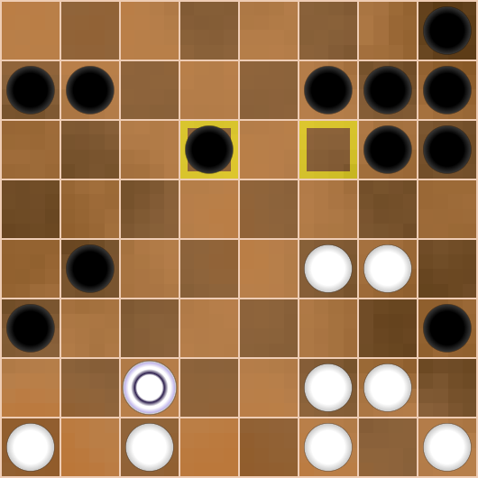
Here is the free tempo, which the white king has been waiting for! However, if we immediately play next
19.c2a2? g5:g3
20.a2:e5 …
the white king will destroy 5 black pieces and will be forced to stop on the field e5, as it is impossible to jump the f5 piece twice. But in this case Black catches the king by f6g5! See here:
20… g3h2!
21.h1:h3 f6g5
22.e5:h5 h6:h2
Diagr. 7 
Thanks to the active checkers h2 and b4, Black gets the king first and must win.
Let’s go back to the diagram 6.
As you can see, checker e4 hinders the white king, limiting its mobility. For this reason White should not hurry to use the free tempo, but make an incredible move…
19.e4e5!! …
Diagr. 8 
The most amazing thing is that I found this move while playing the game, mulling over the position in my mind! I remember it was on my lunch break at work. I didn’t think any more, because White’s king gets the greatest opportunities, and I intuitively felt that Black would be bad.
Next, we’ll look at all 3 captures.
Continuation 1.
19… g5:g3
20.e5:e5 …
Diagr. 9 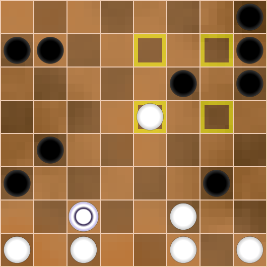
Playing black checkers and defending such a position is a below
average pleasure. Even if analytically it will be proved that Black
saves, then most likely it is possible by the only correct moves. The
prospect of finding a chain of the best 10-15 moves in a row, when you
can’t make a single mistake, instantly breaks the will of 95% of
players. And only 5% are able to balance over the precipice, like the
ship captains of past centuries who were caught in the terrible storms
at Cape Horn, but still overcame the challenge.
Let’s imagine that you play black and try to overcome all the obstacles
on the way to salvation.
Black has 2 methods of defence: passive and active.
a) The passive method consists in catching the white king by sacrificing
several checkers:
20… g3h2!
21.h1:h3 b4c3
22.c2:g6 h6:f6
Diagr. 10 
So, material equality is restored, but the powerful checker e5 gives White a strong initiative. Since Black threatens to invade the field b2, White has no time to invade e5d6 and has to spend one tempo on defence.
23.a1b2 b7c6
24.f1f3 h8h6
26.f2f4 h7h5
Diagr. 11 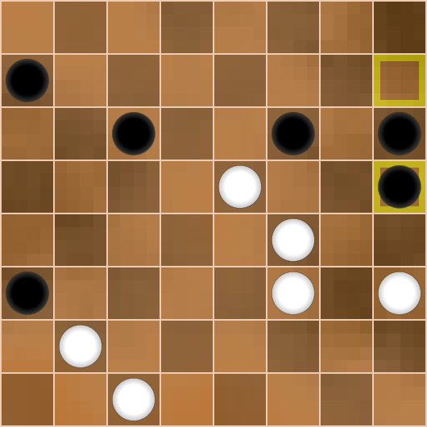
Black responds to White’s attack on the vertical line ‘f’ with a counterattack on the line ‘h’!
27.f3f5 h6h4
28.f5:f7 h4:h2
29.f7g8! …
Diagr. 12 
So, Black also gets a king by attacking all white checkers at the same time. But it turns out that the move
29… h2h1/h2g1??
instantly loses the game after a surprising answer
30.g8a2!! h1:f3
31.a2:b3, 2:0!
This example clearly shows that the mobility of the king can be a terrible strength (like the white king) as well as a weakness (like the black king).
To escape, Black had to anticipate this trap! A tentative sacrifice leads to a probable draw
29… c6d5!
30.e5:c5 h2h1
31.g8h8 h1:f3
32.h8:c3 …
Diagr. 13 
The white king constantly attacks both black pieces, which are placed
too far from each other and cannot interact. One of the black pieces
dies, draw.
Convince yourself of it.
So, the passive method of defence allows Black to achieve a draw with difficulty. However, analysis after the game is not the same as direct play at the board!
Let’s go back to diagram #9 and consider
Diagr. 9
20… b7c6
21.c2:c8 a3b2
Diagr. 14 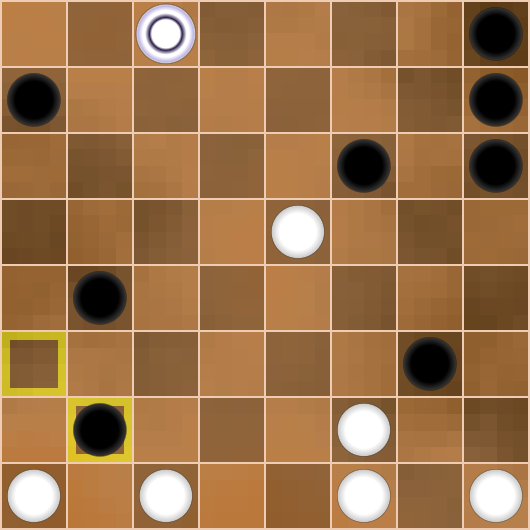
Black goes for a big risk, as the checker e5 is potentially the second king. However, there are a large number of players who cannot defend for a long time and due to their character prefer to take action. For this reason, advice like ‘you should play this way’ or ‘you shouldn’t do that’ should be considered with caution. Each of us has our own tastes, character and preferences. Taking a risk, Black gets a strong counterplay thanks to pieces b4, b2 and g3.
Let’s think about how White can stop the Black onslaught. Straightforward manoeuvre e5d6?! comes across a strong move b4b3!, after which White’s defence is cracking at the seams in points b1 and h2. Moreover, the material advantage may be on Black’s side, in addition, the powerful column h8-h7-h6 will have no obstacle on h1. Even without counting the variants it is clear that this way does not give White an advantage. On Black’s way to getting a few kings must be maximally difficult tasks - this is the right direction of thought for White! The expected move e5d6 does not hinder Black’s plans at all, so White should use the mobility of its king to constantly harass Black’s pieces and prevent them from living in peace.
22.c8a8! …
The point of this attack is that Black can’t get a king after
22… b2b1?
23.a8:a6:g6:g1! b1:e8
24.f1e2, 2:0, the black king is catching.
Black must see it in advance!
Therefore, the correct answer is
22… a7b6!
23.a8a2! b2b1
24.a2a4 …
Diagr. 15

That’s exactly how White should bother Black! Elimination of the checker e5 would solve all problems for Black, but after b1:e6 - a4:e8 Black’s chances for a draw are minimal.
24… b1:g1! 25.a4:f8 …
Diagr. 16 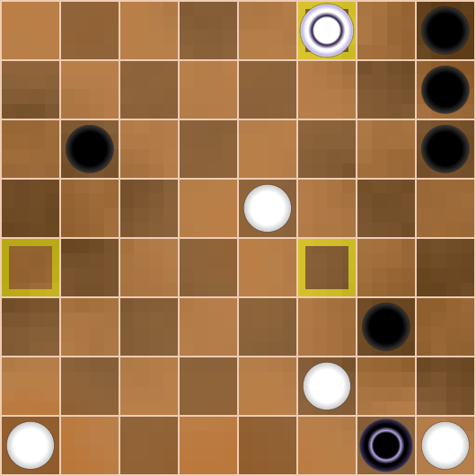
Black’s material advantage must not be misleading, for if White gets a second king, it will be no laughing matter for Black. In this position, preventive defence manoeuvres such as
25… g1d1
lead to a painful and heavy game for Black after
26.e5f6! …
White threatens combination hits connected with moves f2f3 and f6g7.
For this reason it is impossible to play either d1d7 or d1e1.
Meanwhile, White threatens to get a second king and completely torture
Black.
Another try is much better for Black:
25… g1f1!
Now it is bad to catch the black king by e5f6, as the white king will
be caught in response on the h3 field after h7g6.
Try to see this variation in your mind.
It seems that White is forced to give way to black checker g3, but not everything is so simple!
26.f2e3! g3f2
This is the most natural move for Black, the second king will be on the next move, and now it seems that White has big problems, but
27.e5f6! …
Diagr. 17
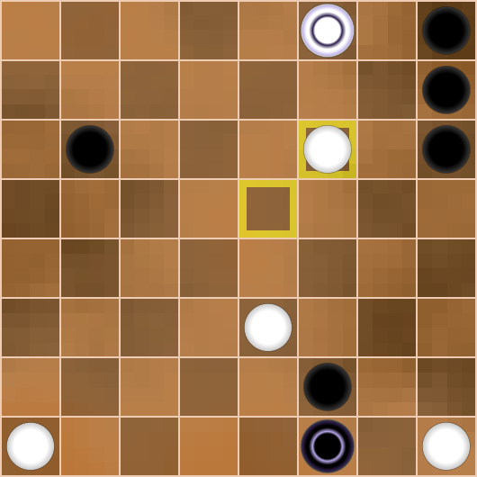
The confrontation of kings f8-f1 is extremely dangerous for Black, and f2e1?? immediately loses because of f8g8!! A panic escape like f1d1 is followed by the strike f6g7, and again 2:0.
This is the moment when the player needs equanimity and a fresh head. I suppose that the best solution for Black is to go to the king’s ending after
28… f2g1!
29.e3e4 f1:f7
30.f8:a6 g1g5!
Diagr. 18 
Of course, you should prevent the movement of the checker e4.
31.a6a5 …
White, on the contrary, tries to provide a path for its checker, the king on the edge of the board serves this purpose perfectly.
32… h8g7!
Black doesn’t want to play under pressure and exchanges kings, approaching checker h6 on 2 fields forward.
33.a5:h5 h6:h4
Diagr. 19
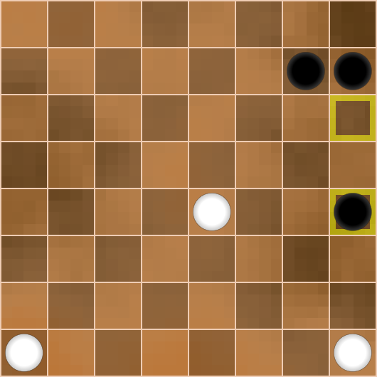
Well, both sides get kings at the same time, but Black has another subtle point to consider.
34.e4e5 h4g3
35.e5e6 g3f2
36.e6e7 f2f1
37.e7e8 …
Diagr. 20
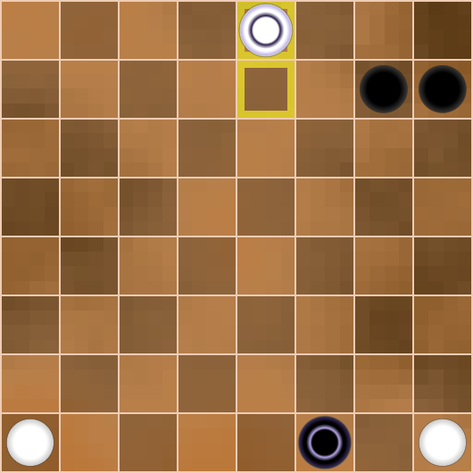
Despite its apparent simplicity, the position still has many nuances
and requires a certain technique from the player.
Black must realise that the checker a1 cannot be stopped, because the
field a8 is controlled by White.
In addition, Black should not double checkers on the vertical ‘h’, as
they will bump into the checker h1, and the neighbouring vertical ‘g’
will also be controlled by the white king from the field g8. This is
unpleasant and will give White additional opportunities.
Therefore, Black should break through the centre.
In addition, we should clearly understand that the player who gets the
second king first wins.
Then the following moves are possible:
37… g7f6
38.a1a2 f6f5
39.a2a3 f5f4
40.a3a4 f1e1
Diagr. 21
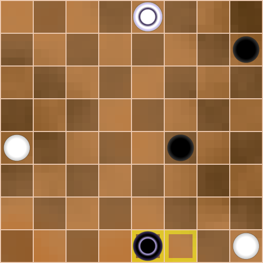
Black takes away from White vertical ‘e’, and the struggle is escalated to the limit. Again, never think that such endings are draws, it is a mistaken opinion! Perhaps a deep analysis will confirm that the chances of the sides are equal, but in practice in the vast majority of cases some player wins.
41.e8h8 h7g6
Capturing the white king with 41… e1b4 is no answer for black, as the lonely king is forced to painfully defend against two edge pieces.
42.h8h3 g6f5
It is clear that Black could not attack checker a4 from the field a1,
as White would in turn attack 2 checkers and win.
Therefore Black keeps its pieces together, not apart.
43.a4a5 e1a1
Diagr. 22
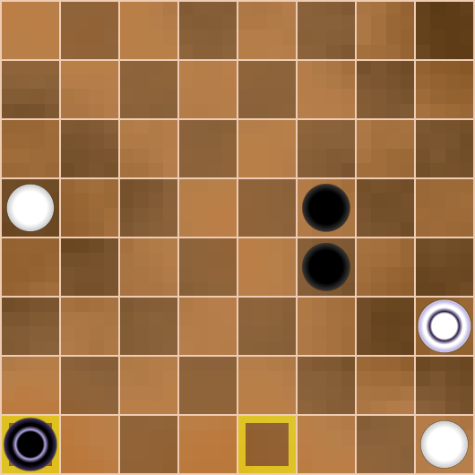
White should not exchange its active checker a5 for any black
checker, because the remaining last simple checker of Black has a
significant advantage in development over the checker h1.
This fact gives Black a great chance to win, as the ending 2 kings
vs. king+ checker is won for the strongest side.
44.a5b6 a1a3
45.h3g2 f5f3
46.b6b7 …
Diagr. 23

Now it’s immediately losing, the move
46… a3a2?
47.b7a8 a2:h2
48.h1:h3 f3g2
49.a8a1 …
2:0, as the white king controls the h8 field.
It looks better
46… a3a8
47.g2h2 f4g3
48.h2b2 a8a2!
Diagr. 24 
That’s how sharp positions can arise from simple endings! Both sides are looking for the final waiting moves.
49.b2a1 a2a8
50.a1b2 a8a2
There are probably still ways to escalate the fight further, but I
suppose it’s wise to settle for a draw by repeating moves.
If Black wants to play aggressively like a8h8 with the threat of g3h2,
then after cold-blooded b7a8! White wins.
Well…as we see, the game ends in a draw!
So, in general, Continuation 1 is a saving for Black but Black’s way
has many obstacles and tricky game moments and the reader could see how
difficult this path is for the ordinary man.
Maybe Black would have an easier time playing in other continuations?
Let’s consider them.
Diagr. 8
Continuation 2.
19… e6:e4 20.c2a2 g5:g3 21.a2:a5:g5:g7:e7:e3:h3 …
Diagr. 21
According to the majority rule, the latest capture of White is
correct.
This is the kind of capture that scared me during the game, as it is
very difficult to resist the mobility of the king. I didn’t have the
energy or desire to count all the variants, I just realised that I
shouldn’t go into such a maze.
Black’s position is close to lost and what can Black do?
21… f6g5!
This move seems to be the strongest. Black threatens to capture the king (h6h5 or g5h4), hinder the attack with tempo h3a3 because of b4c3 with capture of the king. As you can see, there are hidden resources even in difficult positions.
Black’s aim is to try to stretch White’s defence by attacking on
different flanks. It is useful to set traps for the white king.
This is easy to advise, but how to implement it in the game?
White’s task is also clear: to hinder the opponent’s plan and gradually exchange pieces, increasing the king’s strength.
22.h3c3 g5g4 (with the idea of g4g3 & h6h5)
23.c3a3 …
Diagr. 22
White with tempo attacks checker a7, there is no move b4c3, but if Black wants to capture the king by h8h5 and b7a6, White gets 2 extra pieces and wins.
23… b7a6 (again threatens g4g3)
24.f1g2! g4h3 25.f2g3 h3:f3
26.a3:g3 h8h5
Diagr. 23
Black does not want to play b4a3, as after c1b2 this piece is also exchanged. However, these efforts are in vain.
27.c1b2 h7h4 28.g2h3 h4:h2 29.h1:h3 h6h4 30.g3h2 …
Diagr. 24
I guess we can call it a day here, White wins. Of course, Black could play differently, but this variant demonstrates White’s defence technique. It seems to me that Continuation 2 is unpromising for Black and gives less chances than Continuation 1.
Let’s go back to diagram 8 again and evaluate the third continuation.
Diagr. 8
Continuation 3.
19… f5:d5
This continuation is weaker than the previous ones and it’s easier for White to get a win.
20.c2a2 g5:g3 21.a2:a4:e4:e7:g7:g5:b5:b8 …
Diagr. 25 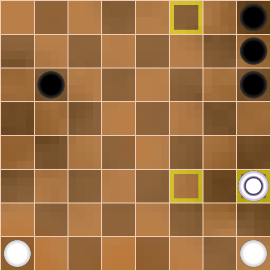
There was another route with a get on the a8 field, but it is not principal any more. White has restored the material balance, has a king and a strong first line defence. In addition, after a7b6 the white king is not caught!
Next, we are still thinking schematically and not counting any long
variants.
I propose to exchange the active black checker g3, after which Black’s
attack will be ineffective. I’ll limit myself to an approximate
variant.
21… f6g5
22.b8e8 g5h4
23.f1f3 g3:e3
24.e8:e1 …
Diagr. 26 
Each exchange is favourable to White and leads to a win.
24… h8h5 25.e1f1 …
As soon as the black piece gets to the h3 square, it will be exchanged.
25… a7a6 26.f2g3! a6a5 27.g3g4 h4:f4 28.f1:f8 …
2:0.
Diagr. 27 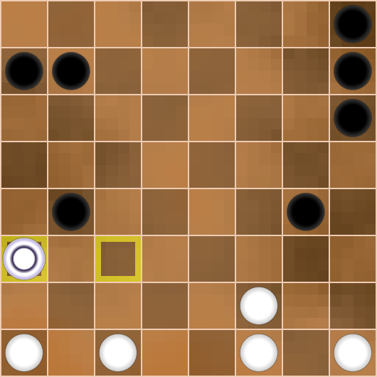
Afterwards White arranges a blockade on the second horizontal and in
the point h2, and the checker a5 is easily stopped.
I purposely do not consider this ending in detail, as such positions
need to be felt without counting variants.
Thus, we conclude that in the position in diagram 8 White has a good chance to win. Only in Continuation 1 can Black hope for a draw after overcoming significant difficulties.
Let’s go back to the main flow of the game and to Diagram 5.
Diagr. 5
Of course, I didn’t see anything like this during the game, but I found the move 19.e4e5, which gives White wide opportunities. I got scared and refused the method of defence 17…g7g5.
But I had to find another line of defence! How did I reason? The white king is very strong and to limit it somewhat, I should not create weak fields in my camp, i.e. keep the checker massif compact. Besides, I wanted to keep my a3 and b4 pieces at all costs to scare my opponent with a breakthrough on both flanks.
17… h6g5!
This move is the straw I grasped at when diving to the bottom. Indeed, Black does not weaken the g7 field, maintaining a monolithic mass. Now all the above-mentioned combinations do not work. On top of that, I’m preparing a stealth strike.
18.g4h5 g7h6!
An unexpected answer.
19.h5:f5 h3h2
20.h1:h3 g6g5
21.f5:h5 h6:h2
Diagr. 28 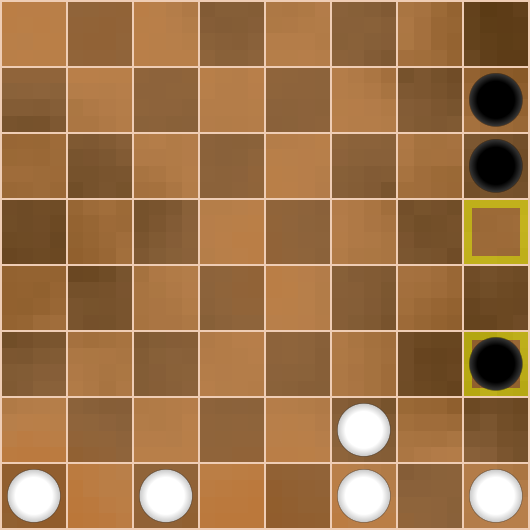
Among other things, Black threatens to capture the king after b4c3. As soon as this position happened in our game, I saw a combination that made my heart freeze:
22.e4e5 e6:g4
23.f2e3 h2:f2
24.c2:a2 …
Diagr. 29 
If the white king had taken a different route and captured the b4 checker, it would be caught after b7b6. But of course, Ray would have seen it.
What to do now? Yes, I could catch the king by the а7а6 way, but then I would be without a checker. That’s dangerous! But I intuitively felt that I might be saved after
24… b4b3!
25.a2:a8 b3b2
Diagr. 30 
I felt a sense of relief since this doesn’t work:
26.с1с2? b2:d2
27.a8b8 b7a6
28.b8b1 a6b5
and the white king is caught, 0:2. Fortunately, White doesn’t win here, and my heart beat a little more evenly.
Back to the main game and diagram 25.
Diagr. 25
22.f2g3 h2:f2
23.c2:g2 …
It’s an easily understandable exchange of a person who wants to feel solid ground under his feet.
Diagr. 31 
I considered f7f5 here, but the attack on 2 pieces often leads to trouble. White has a strong answer:
24… f7f5?
25.e4e5! …
1.the 2x2 exchange
25… e6:g4
26.g3:e5 b7c6
27.g2a2 …
led to a quick victory for White due to the dispersed Black forces;
2.after
25… f5:h3
26.e5:e7 h3h2
27.e7f8! h2:f2
28.f8:g2 …
2:0. I suggest the reader to calculate this variant in his mind.
I decided to leave the move f7f5 in reserve, and in the meantime set a small trap.
23… b4b3
Diagr. 32 
Firstly, you shouldn’t despair, you should fight on! Secondly, Black
straightens the broken checker formation b4-a3, it will not allow white
king to destroy them with slalom.
Thirdly, White’s active attack g3e5 in view of e6d5 and f7g6 gives
nothing to White, Black catches the opponent’s king and threatens to get
a king with material advantage.
Fourthly, I provoke my opponent to an attack
24.g2a2 b7a6 25.a2:a4 b3b2
Diagr. 33 
If Black gets the king, White may lose. Maybe this fact frightened my
partner a lot and he refused to do it.
But there was really nothing to be afraid of!
26.a4d1! …
White potentially threatens to play c1c2, but so far the king is caught. However, with g3e5 White can destroy the opponent’s position, so I intended to play here
26… e6d5
27.d1:g6 b2b1
Diagr. 34 
28.g6g8! b1:g5
29.g8:g1 f7g6
Counting up to this position, I made sure that the white king is still caught, but in the heat of the fight I didn’t realise that despite Black’s material advantage, White wins!
30.g1:g8 h8:f8
31.e4e5! …
Diagr. 35 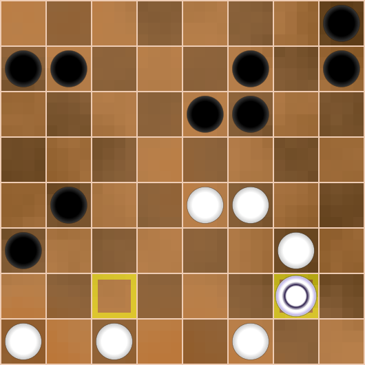
White is very much ahead of the opponent in development and gets two kings at once! Black’s position is lost, I suggest the reader to check it by himself.
Thus, the direct attack 24.g2a2 with high probability led to White’s victory.
Let’s go back to the main diagram 32 again.
Diagr. 32
Ray probably considered the move
24.g3e5 …
but saw that after
24… e6d5!
25.e5:c5 f7g6
26.g2:g8 h8:f8
Diagr. 36
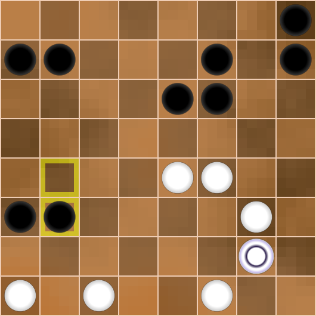
Black first gets a king and has an extra checker.
In the position of diagram 32 Ray had a quiet move f4e5. The
advantage of this move over g3e5 is that the vertical ‘g’ is not opened,
and the white king is not caught! After the answer h8g7 there will be an
exchange on the e7 square, this creates an extremely difficult game for
both sides, in which it is easy to make an unforced mistake.
For example:
24.f4e5 h8g7
25.e5:e7 f7:d7
26.g2a2? b7a6
27.a2:a4 b3b2
Diagr. 37 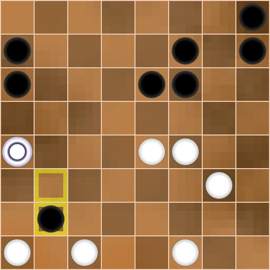
Suddenly it turns out that it is bad to play a4d1 because of b2b1, and White is forced to capture the checker d7, clearing the way for the black king, 0:2.
As we can see, in this edition the attack g2a2 is ineffective and should be limited to capturing space by 26.e4d5 with an extremely complicated game.
But White missed this chance to fight for the win.
It was psychologically difficult to play under such a pressure of
threats, Ray wanted clarity and went for further simplification of the
position.
Diagr. 32
24.c1b2?! b3:b1
25.a1:c1 f7f5!
Diagr. 38 
Checkers a1 and b4 have disappeared from the board, so White’s possibilities are sharply narrowed. But this should have been foreseen in advance!
Without checker a1, the a2 field is inaccessible to the White king.
In addition, the black piece b4 made Black’s position lattice, and now
this piece is missing.
For example:
26.е4е5? f5:h3
27.e5:e7 h3h2
Diagr. 39 
With checkers a1 and b4 White wins by simple e7f8 as shown above, but in the position of diagram 39 only Black can win, as White has little strength and few possibilities against the opponent’s offensive. I suggest the reader to convince himself of this.
Let’s look again at diagram 38.
Ray had one last opportunity to continue the fight with a combination:
26.f4g5! f5:h5
27.e4e5 e6:e4
28.g3f4 e4:g4
29.g2:a1 b7a6
Diagr. 40 
Learn to evaluate such positions without counting variants!
White’s task is to repel the attack on the two outermost
verticals.
To do it move checker c1 to vertical ‘a’ and exchange it for 2 black
pieces, white king gets to the field a8 and controls from there the
fields h1 and a1. If Black gets to h1, its king will die immediately
after a8a1.
It seems to be a draw!
What if Black refuses to exchange on line “a”? Then White will get a second king, which is only advantageous for White.
I’ll show the demo variant below for the sake of order:
30.c1b2 h8h6
31.b2a3 h7h4
32.a3a4 h6h3
33.a4a5 a6:a4
34.a1:a8 h5h2
Diagr. 41 
Then White makes any move with king controlling the a1 field.
Simplifying the narrative:
35.a8a2 h4h1 36.a2a1 h1:e1 37.a1:h1 h3g2
Draw! Well… That would be a fair result of such a battle!
Let’s go back to diagram 38 from the real game.
Diagr. 38
But Ray refused this continuation or just didn’t see it. I think he was very tired by this moment and was prone to make drastic decisions.
26.g2a2? …
It is likely that this abrupt move is the crucial mistake.
26… f5:h3
27.a2:a8 h3h2
Diagr. 42 
28.a8a2? …
It’s already a surrender of all positions. Now White loses immediately. Unfortunately, Ray didn’t have enough strength for the whole game, especially such a tense and complicated one. Each of us has our own limit, own ceiling, own peak. Perhaps Ray did not take into account that the king on h1 attacks in two directions.
28… h2h1
29.a2b1 h1:e5
30.b1:b8 …
Diagr. 43 
Black’s material advantage is too great. Still was played:
30… e6f5
31.b8e8 e5e1
32.e8h5 …
Diagr. 44 
32… e1:a1
33.h5:d5 f6g5
34.d5:h5 h7h6
White surrendered, 0:2.
Of course, in the position of diagram 42, it was necessary to play
28.a8a1! …
Now Black’s king can be caught after h2h1 - f1e2, so I must first distract the white king.
28… b7a6!
29.a1:a8 h2h1
Diagr. 45 
30.e4f5! h1:a1
31.f5:f7 … (threatens f7g8, draw)
31… h8h6
Diagr. 46 
White gets a second king, but the chances of winning here are only for Black. The analysis of this position can be endless, the fight could go on for a long time but with careful play Black can get a winning ending of kings like 3x2.
Let’s summarise.
The game turned out to be extraordinarily complicated, but I believe the reader could learn a lot, as I did.
My opening plan almost succeeded, but I thought that winning was
already easy, and Ray punished me for that with a brilliant combination.
After getting the king, White also had a great chance of winning, but I
woke up and started to fight back desperately. The position was full of
complex variants and perhaps suited my style more than Ray’s. With each
move my energy was rising and Ray’s was falling.
My move 23…b4b3 had the purpose to frighten the opponent and put
pressure on his position. If Ray had kept his cool, he could punish me a
second time for my risky style of play, but I was lucky.
Another opportunity for Ray to put me in big trouble was move 24.f4e5.
To be honest, I don’t know how the game would have ended then. Let it
remain a little secret of our meeting.
White played better for the lion’s share of the whole game, but in the
end Ray didn’t have enough strength.
This memorable victory allowed me to get 1 point ahead of such
monsters as Busybee and Diamante at the last moment and take 1st place
in the tournament.
Ray Garrison performed very well, taking the place right behind us.